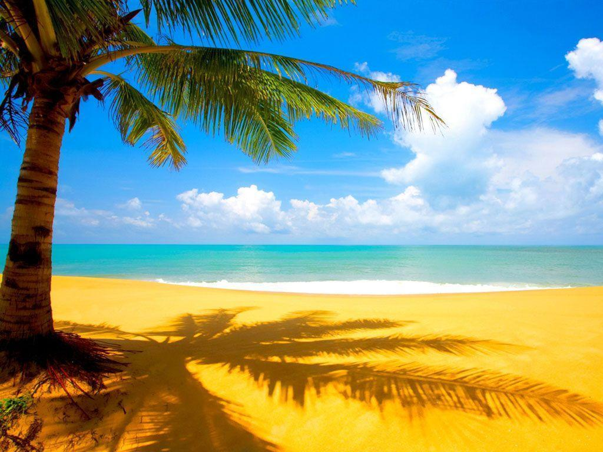

Pantai Rahasia di Bali
Sebuah pantai tersembunyi yang belum banyak dijamah turis. Cocok untuk kamu yang ingin menyepi.

Liburan Tropis Impian
Tips liburan ke daerah tropis dengan budget hemat tapi tetap menyenangkan.